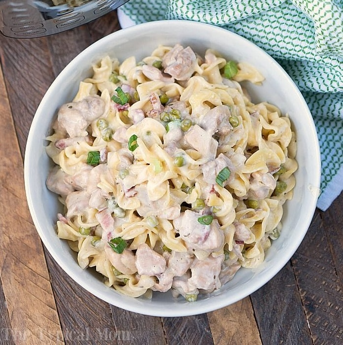

Crack Chicken

Photo: The Typical Mom
Description
Dump and go dinners are some of the easiest and fastest dinners to make, and can be the most delicious. This one is very aptly named! The ranch seasoning really gives ingredients that don't have much flavor plenty of it without too much extra effort. Crack chicken is a filling comfort food that most people will love.
Crack chicken is great because it's so simple you could easily add or substitute ingredients to make it your own. What's listed here is just one variation of many, feel free to get creative if you have the time!
Ingredients
Special requirements: pressure cooker
- 2 lbs chicken breasts or thighs
- 8 oz cream cheese, softened
- 3 strips bacon, diced
- 3 tbsp cooking oil
- 1 packet dry ranch seasoning
- 3 cups chicken broth
- 16 oz of wide egg noodles
- 1/2 cup frozen peas, optional
- 1/2 diced onion, optional
- 1 tbsp minced garlic, optional
Steps
- Set pressure cooker to saute and add oil and bacon.
- Cook until bacon is almost done.
- Add onion and cook until fragrant, about 4 minutes.
- Add minced garlic about halfway into cooking the onion. When the garlic is fragrant the onion should be cooked as well, about 2 minutes.
- Add cubed chicken pieces and cook until outsides of chicken are no longer pink.
- Turn the pressure cooker off so it can cool before turning it to high pressure. Scrape the remaining bits of meat off the bottom of the pot.
- Sprinkle ranch seasoning packet on top of bacon and chicken and mix gently.
- Cut softened cream cheese into clumps and put on top of chicken mixture, followed by 1/2 cup of chicken broth.
- Close lid and steam valve, and set to high pressure for 5 minutes.
- Quick release, stir contents gently allowing cream cheese bits to fully melt into the remaining liquid. Do not allow the pressure cooker to keep warm so it can cool before setting to high pressure again.
- Add your frozen peas, then the egg noodles, then the remaining 2.5 cups of chicken broth on top of the noodles.
- Gently stir.
- Close lid and steam valve, set to high pressure for 3 minutes.
- Quick release
- If you want thicker sauce, turn the pressure cooker to saute again and have liquid lightly boil for 1-2 minutes, stirring gently while boiling. Allow to sit and the longer it sits the thicker it will get.